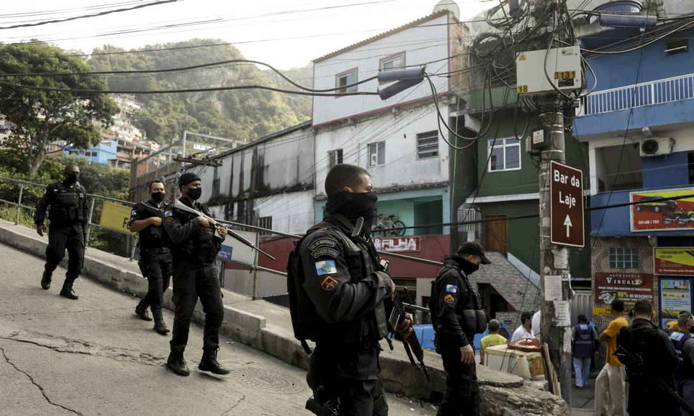
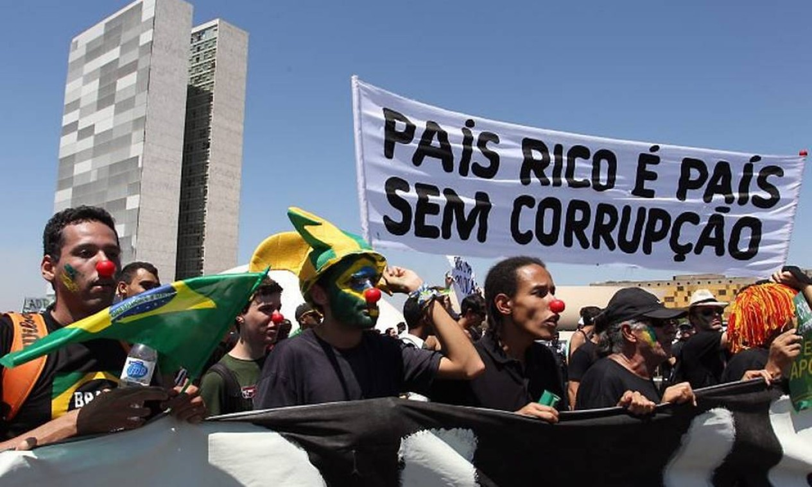
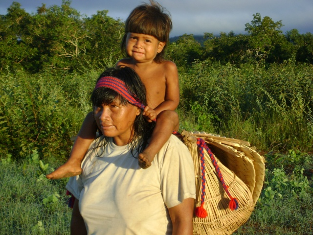
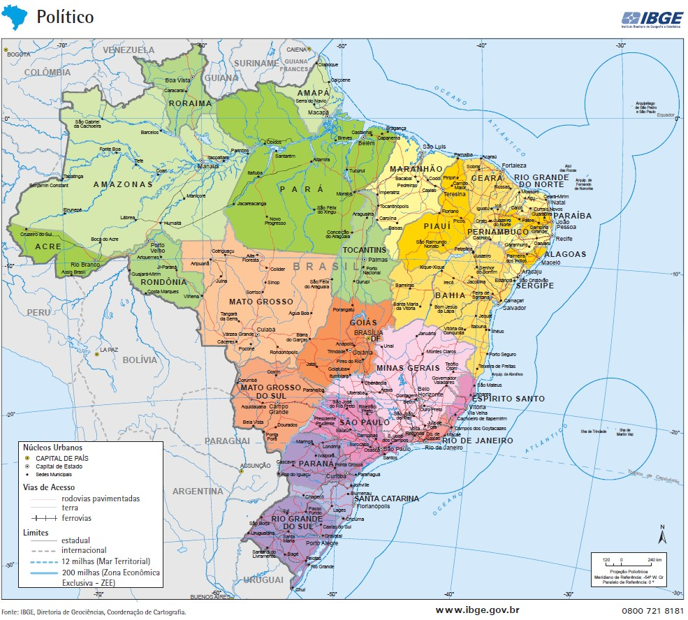

Brasil e a Agenda 2030
A partir dos objetivos definidos pela ONU, foram definidas metas específicas para cada país, inclusive o Brasil, em que a ODS 16 é um dos Objetivos de Desenvolvimento Sustentável mais urgentes. Considerando a crise de segurança pública, corrupção sistêmica e fragilidade institucional. Nos últimos anos, diversos acontecimentos ganharam destaque na mídia e ilustram os desafios e pequenos avanços do país nessa área.
Situação Atual no Brasil
Violência e Segurança Pública
O Brasil registrou 40.800 homicídios em 2022, mantendo-se entre os países mais violentos do mundo. Estados como Bahia, Rio de Janeiro e Ceará lideram as estatísticas.
Os dados revelam profundas desigualdades regionais e sociais: enquanto a taxa nacional é de 22,7 mortes por 100 mil habitantes, em Alagoas chega a 46,5 e no Amapá a 56,9. A violência atinge principalmente jovens negros da periferia - 78% das vítimas de homicídio são negras e 56% têm entre 15 e 29 anos.
O Massacre em São Paulo (dezembro 2023) com 11 mortos reacendeu o debate sobre milícias. Estima-se que esses grupos criminosos atuem em 60% do território do Rio de Janeiro, controlando desde serviços básicos até candidaturas políticas. Em 2023, o Ministério da Justiça criou a Força-Tarefa de Combate às Milícias, que já desarticulou 15 células em 6 estados.
As políticas de segurança enfrentam o desafio de reduzir a letalidade policial (6.429 mortes em 2022) enquanto combatem organizações criminosas cada vez mais sofisticadas, com ramificações internacionais e envolvimento em crimes cibernéticos.
Corrupção e Transparência
Brasil ocupa a 96ª posição no Índice de Percepção da Corrupção (2023), tendo piorado 5 posições desde 2020. A nota brasileira (38 em 100) está abaixo da média global (43) e da americana (69).
Os casos recentes revelam novas modalidades de desvio: as fraudes no Cartão Corporativo (2023) mostraram esquemas de superfaturamento em compras de baixo valor, enquanto a Operação da PF contra Sanguessugas (2024) expôs desvios em licitações de saúde que superam R$ 1 bilhão.
O avanço da legislação anticorrupção (Lei 12.846/2013) e a criação da Controladoria-Geral da União (CGU) trouxeram melhorias, mas persistem desafios: apenas 12% dos processos por improbidade administrativa resultam em condenação definitiva. A Lava Jato recuperou R$ 4,8 bilhões, mas deixou lições sobre a necessidade de aprimorar os mecanismos de investigação sem violar garantias fundamentais.
Em 2024, o governo federal lançou o Programa Nacional de Prevenção à Corrupção, com foco em inteligência artificial para cruzar bancos de dados e identificar irregularidades em tempo real.
Acesso à Justiça
O sistema judiciário brasileiro enfrenta uma crise sem precedentes, com 80 milhões de processos pendentes e tempo médio de julgamento de 3 anos e 4 meses em primeira instância. Nos tribunais superiores, 40% dos processos têm mais de 10 anos.
Programas como Justiça Presente (parceria com PNUD) buscam modernizar a Justiça, com resultados expressivos: digitalização de 12 milhões de processos, implantação de 120 varas virtuais e redução de 22% no acervo em tribunais piloto. Porém, a Defensoria Pública atende apenas 45% da população elegível, deixando 55 milhões de brasileiros sem assistência jurídica gratuita.
Os grupos vulneráveis enfrentam barreiras adicionais: indígenas têm 3 vezes menos acesso à Justiça que a média nacional; pessoas com deficiência encontram dificuldades em 67% dos fóruns; e mulheres vítimas de violência enfrentam demora média de 2 anos para conclusão de processos.
A reforma do Código de Processo Civil (2015) e a criação da Justiça 4.0 (2023) são avanços importantes, mas especialistas apontam a necessidade de maior investimento em conciliação (apenas 8% dos casos são resolvidos por meios alternativos) e na capacitação de servidores para lidar com novas tecnologias.
Metas para o Brasil
16.1
Reduzir significativamente todas as formas de violência e as taxas de mortalidade relacionadas, em todos os lugares, inclusive com a redução de 1/3 das taxas de feminicídio e de homicídios de crianças, adolescentes, jovens, negros, indígenas, mulheres e LGBT.
16.2
Proteger todas as crianças e adolescentes do abuso, exploração, tráfico, tortura e todas as outras formas de violência.
16.3
Fortalecer o Estado de Direito e garantir acesso à justiça a todos, especialmente aos que se encontram em situação de vulnerabilidade.
16.4
Meta mantida sem alteração.
16.5
Reduzir substancialmente a sonegação fiscal, a corrupção e o suborno em todas as suas formas.
16.6
Ampliar a transparência, a acontabilidade e a efetividade das instituições, em todos os níveis.
16.7
Meta mantida sem alteração.
16.8
Ampliar e fortalecer a participação brasileira nas instituições de governança global.
16.9
Até 2030, fornecer identidade civil para todos, incluindo o registro de nascimento, em especial para os povos ciganos, as comunidades quilombolas, os povos indígenas, os povos e comunidades tradicionais de matriz africana e de terreiros, as populações ribeirinhas e extrativistas, além de grupos populacionais como mulheres trabalhadoras rurais, a população em situação de rua, a população em situação de privação de liberdade e a população LGBT.
16.10
Meta mantida sem alteração.
16.a
Fortalecer as instituições relevantes, inclusive por meio da cooperação internacional, para a construção de capacidades em todos os níveis, em particular nos países em desenvolvimento, para a prevenção da violência, do crime e da violação dos direitos humanos.
16.b
Promover e fazer cumprir leis e políticas não discriminatórias e afirmativas.
Estados Brasileiros e a Agenda 2030
Vários estados desenvolveram planos locais para implementar os ODS:
São Paulo
Programa SP 2030: Integra ODS ao planejamento estadual.
Foco no ODS 16: Redução de homicídios e modernização da segurança.
Rio de Janeiro
Plano RJ 2030: Ações para redução da violência.
Desafio: Altos índices de letalidade policial.
Ceará
Pacto por um Ceará Pacífico: Alinhado ao ODS 16.
Resultado: Queda de 30% nos homicídios (2019-2022).
Minas Gerais
Agenda Minas 2030: Prioriza segurança cidadã.
Inovação: Delegacias Digitais.
Paraná
Paraná 2030: Metas de transparência.
Destaque: Programa "Luz no Esgoto".
Pernambuco
Plano PE 2030: Foco em segurança.
Resultado: Pacto pela Vida reduziu homicídios.
Estados com Adesão Parcial
- Bahia: Ações em segurança, sem plano consolidado
- Amazonas: Foco em ODS ambientais
- Rio Grande do Sul: Projetos de transparência